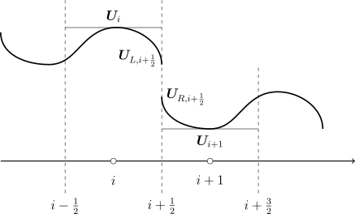

Weighted Essentially Non-Oscillatory (WENO) Schemes were developed by Liu, Osher, and Chan [17] as a refinement to the cell-averaged Essentially Non-Oscillatory (ENO) Schemes of Harten and Osher [9]. The ENO method chooses an appropriate interpolating polynomial to represent the data to avoid including the discontinuous cell in the stencil [25]. ENO methods are very robust and uniformly high-order; however, they involve cumbersome calculations due to the stencil selection process [14].
The WENO method chooses to use a convex combination of all of the stencils to form the reconstruction and avoid the excess calculations needed to choose a stencil [25]. Assigning the appropriate weights to the interpolating polynomials achieves the same essentially non-oscillatory property of the ENO schemes, adaptively excluding the discontinuous cell by giving it an almost zero weight [36].
The order, \(m\), of the WENO reconstruction scales by \(m = 2 r -1\) so that a choice of \(r=2\) corresponds to a third-order WENO scheme and a choice of \(r=3\) results in a fifth-order WENO scheme, where \(r\) is the number of points used for a chosen stencil.

The WENO Scheme uses a smoothness indicator to determine the appropriately weighted polynomial to interpolate the function. Jiang and Shu [14] proposed new smoothness measurements that are more accurate at critical points than the smoothness measurements of Liu, Osher, and Chan [17]. These smoothness measurements minimize the total variation for the approximation.
The smoothness indicators, \(IS_k\), for the third-order WENO (WENO3) scheme are \begin {equation} IS_0 = \left (\boldsymbol {U}_{i+2} - \boldsymbol {U}_{i+1}\right )^2 \end {equation} \begin {equation} IS_1 = \left (\boldsymbol {U}_{i+1} - \boldsymbol {U}_{i}\right )^2 \end {equation} The \(\alpha _k\) values are calculated by \begin {equation} \alpha _0 = \frac {C_0}{\left (IS_0 + \epsilon \right )^2} \end {equation} \begin {equation} \alpha _1 = \frac {C_1}{\left (IS_1 + \epsilon \right )^2} \end {equation} Where the optimal wieghts \(C_0 = \frac {1}{3}\) and \(C_1 = \frac {2}{3}\) and as in the case of the MUSCL Reconstruction of Equation 4.13-Equation 4.15, \(\epsilon = 10^{-6}\) to avoid division by zero. Numerical tests by Jiang and Shu indicate that the results are not sensitive to the choice of \(\epsilon \) as long as the value is in the range of \(10^{-5}\) to \(10^{-7}\) [14].
The weights, \(\omega _k\), have the property \begin {equation} \sum _{k=0}^{r-1} \omega _k = 1 \end {equation} so that near a discontinuity the stencil that includes the discontinuity will be given a weight of \(\omega _k = 0\) and the other stencil will be given a weight of \(\omega _k = 1\) for the WENO3 reconstruction. The weights, \(\omega _k\), are given by \begin {equation} \omega _0 = \frac {\alpha _1}{\sum \alpha } \end {equation} \begin {equation} \omega _1 = \frac {\alpha _2}{\sum \alpha } \end {equation} The stencils are given by \begin {equation} \label {eqn:q13} q_0 = \frac {3}{2} \boldsymbol {U}_{i+1} - \frac {1}{2} \boldsymbol {U}_{i+2} \end {equation} \begin {equation} \label {eqn:q23} q_1 = \frac {1}{2} \boldsymbol {U}_{i} - \frac {1}{2} \boldsymbol {U}_{i+1} \end {equation} The interpolation for \(\boldsymbol {U}_{i+\frac {1}{2}}^R\) is then the convex combination of Equation 4.24 and Equation 4.25 multiplied by their appropriate weights given by \begin {equation} \label {eqn:WENOSum} \boldsymbol {U}^{R}_{i+\frac {1}{2}} = \sum _{k=0}^{r-1} \omega _k q_k \end {equation}
The smoothness indicators, \(IS_k\), of Jiang and Shu [14] for the fifth-order WENO scheme (WENO5) are \begin {equation} IS_0 = \frac {13}{12}\left (\boldsymbol {U}_{i-1} -2 \boldsymbol {U}_i + \boldsymbol {U}_{i+1}\right )^2 + \frac {1}{4}\left (\boldsymbol {U}_{i-1} - 4 \boldsymbol {U}_i + 3 \boldsymbol {U}_{i+1}\right )^2 \end {equation} \begin {equation} IS_1 = \frac {13}{12}\left (\boldsymbol {U}_{i} -2 \boldsymbol {U}_{i+1} + \boldsymbol {U}_{i+2}\right )^2 + \frac {1}{4}\left (\boldsymbol {U}_{i} - \boldsymbol {U}_{i+2}\right )^2 \end {equation} \begin {equation} IS_2 = \frac {13}{12}\left (\boldsymbol {U}_{i+1} -2 \boldsymbol {U}_{i+2} + \boldsymbol {U}_{i+3}\right )^2 + \frac {1}{4}\left (3 \boldsymbol {U}_{i+1} -4 \boldsymbol {U}_{i+2} + \boldsymbol {U}_{i+3}\right )^2 \end {equation} The \(\alpha _k\) values are given by \begin {equation} \alpha _0 = \frac {C_0}{\left (IS_0 + \epsilon \right )^2} \end {equation} \begin {equation} \alpha _1 = \frac {C_1}{\left (IS_1 + \epsilon \right )^2} \end {equation} \begin {equation} \alpha _2 = \frac {C_2}{\left (IS_2 + \epsilon \right )^2} \end {equation} where the coefficients \(C_0 = \frac {1}{10}\), \(C_1 = \frac {3}{5}\), and \(C_2 = \frac {3}{10}\). As in the case of the WENO3 reconstruction of Section 4.2.1, \(\epsilon = 10^{-6}\) is chosen to prevent division by zero. The weights, \(\omega _k\), are given by \begin {equation} \omega _0 = \frac {\alpha _0}{\sum \alpha } \end {equation} \begin {equation} \omega _1 = \frac {\alpha _1}{\sum \alpha } \end {equation} \begin {equation} \omega _2 = \frac {\alpha _2}{\sum \alpha } \end {equation} The stencils are then given by \begin {equation} \label {eqn:q05} q_0 = \frac {1}{6}\left (5 \boldsymbol {U}_{i} - \boldsymbol {U}_{i-1} + 2 \boldsymbol {U}_{i+1} \right ) \end {equation} \begin {equation} \label {eqn:q15} q_1 = \frac {1}{6} \left ( 2 \boldsymbol {U}_{i} - \boldsymbol {U}_{i+2} + 5 \boldsymbol {U}_{i+1} \right ) \end {equation} \begin {equation} \label {eqn:q25} q_2 = \frac {1}{6} \left ( 11 \boldsymbol {U}_{i+1} - 7 \boldsymbol {U}_{i+2} + 2 \boldsymbol {U}_{i+3} \right ) \end {equation} The interpolation for \(\boldsymbol {U}_{i+\frac {1}{2}}^R\) is then the convex combination of Equation 4.36, Equation 4.37, and Equation 4.25 multiplied by their appropriate weights, again given by Equation 4.26.